Префектура Сага · Уресино, Сиота · кофе и молоко
MILKBREW COFFEE и Nakashima Farm: кофе на молоке в старом складе Сиоты
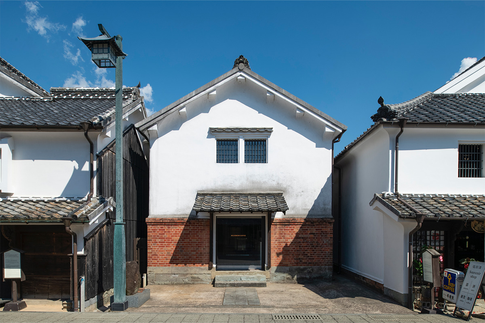
В квартале Сиотацу, среди белых купеческих домов, работает кафе, где молотый кофе заливают не водой, а свежим молоком. Молоко везут с семейной фермы в нескольких километрах отсюда.
Город
Сиотацу: перекрёсток реки и дороги
Сиота входит в город Уресино на юго-западе префектуры Сага. Его старая часть, Сиотацу, в эпоху Эдо была почтовой станцией на дороге Нагасаки-кайдо, которая вела из Нагасаки вглубь страны. Здесь же стоял речной порт: суда заходили сюда по реке Сиота с приливом из залива Ариакэ, и через город шли товары и новые обычаи.
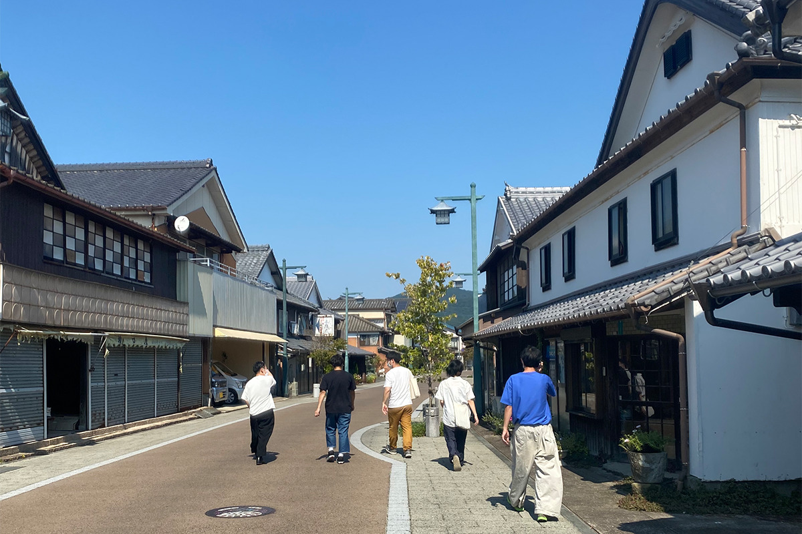
Квартал охраняется государством как историческая застройка. По дороге, которая связывала голландскую факторию Дэдзима в Нагасаки с Эдо, везли и сахар, поэтому её называют ещё «Сахарной дорогой». Вдоль улиц стоят купеческие дома и склады с белыми стенами.
Идея
Кофе, настоянный на молоке
Кафе MILKBREW COFFEE придумали двое. Хиротака Накасима ведёт молочную ферму Nakashima Farm в Уресино, он третье поколение в семье фермеров. Норико Сунага держит в Фукуоке обжарочную ROASTELY MANLY COFFEE.
Однажды Норико Сунага дала фермеру свои пакетики для холодного заваривания кофе, и он опустил их не в воду, а в только что надоенное молоко. Вкус получился совсем другим, похожим на фруктовое молоко. С этого и начались опыты с «милк-брю»: кофе, заваренным в молоке.
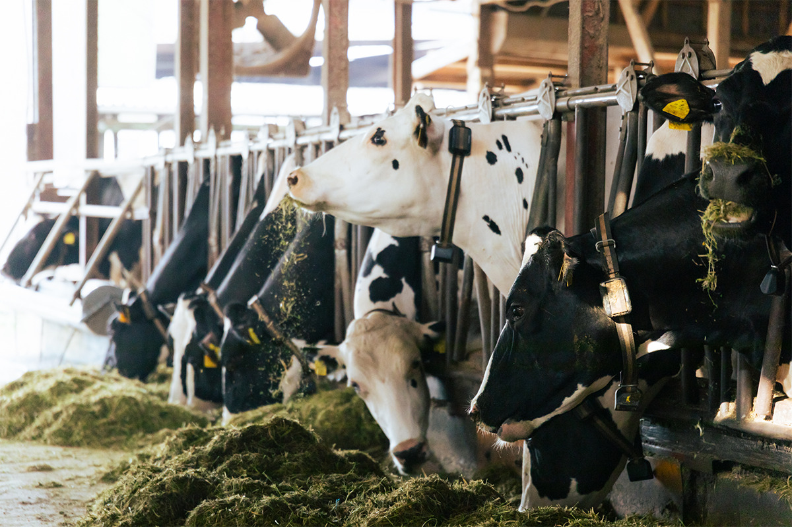
От латте и кофе с молоком такой напиток отличается способом заваривания. Молоко вытягивает из зёрен фруктовые ноты и аромат, а его собственная сладость становится заметнее. Чтобы этот вкус попробовало больше людей, в августе 2021 года партнёры открыли кафе в Сиотацу.
Хиротака Накасима собирался стать архитектором и уехал учиться в район Канто, но потом вернулся к семейному делу, решив, что будущее интереснее строить на ферме. В 2012 году он открыл при ферме сыроварню. Ферма первой в Японии стала выпускать бурый сыр и получила за него золото и приз лучшего в категории на конкурсе Japan Cheese Award 2018, а в 2019 году бронзу на World Cheese Awards. Принцип хозяйства звучит как «от травы к сыру»: на ферме делают компост, удобряют землю, растят траву и коров и варят сыр из свежего молока.
Норико Сунага до открытия своей обжарочной работала в Starbucks и была там вторым «кофейным амбассадором». Её называют «матерью аэропресса»: она продвигает этот способ заваривания и проводит японский чемпионат по аэропрессу.
Здание
Рисовый склад, ставший банком и кафе
Здание кафе построили в 1855 году как склад для риса. Позже его использовали под банк местные купцы, они же заботились о постройке, и склад дожил до XXI века. Владельцы кафе выбрали это место за его историю: здесь веками встречались люди и товары с реки и с дороги. Они рассчитывают, что кафе поможет сохранить здание и для следующих поколений.
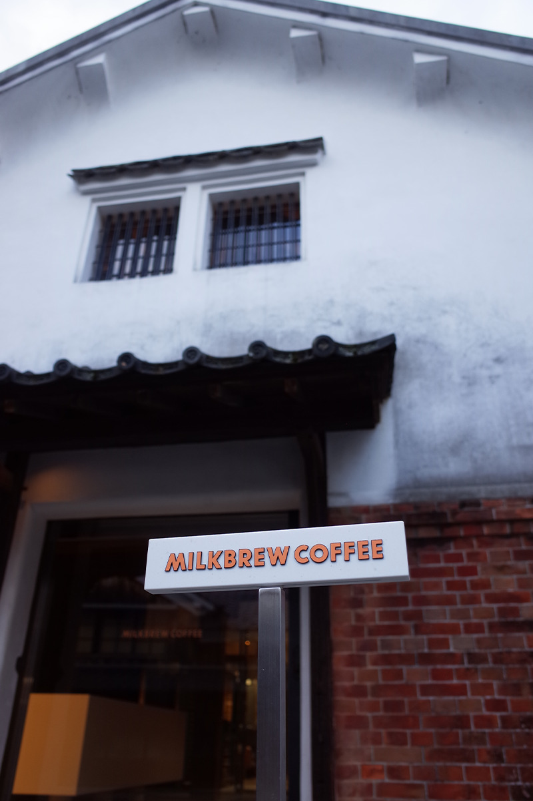
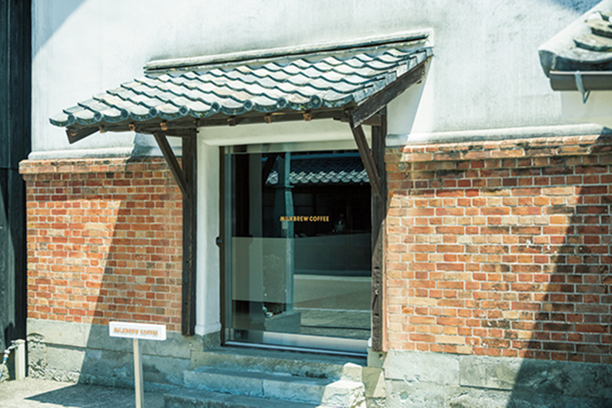
Интерьер спроектировало бюро CASE-REAL дизайнера Коити Футацумата, которое работает в Фукуоке и Токио. В складе, которому больше 165 лет, оставили старые материалы и добавили новые: искусственный мрамор и нержавеющую сталь. Стойку и витрины на стенах сделали из белого искусственного мрамора, вдохновившись цветом молока, а швы зашлифовали, чтобы они выглядели цельными гладкими блоками. Над кафе убрали чердачный настил, и стали видны мощные стропила крыши.
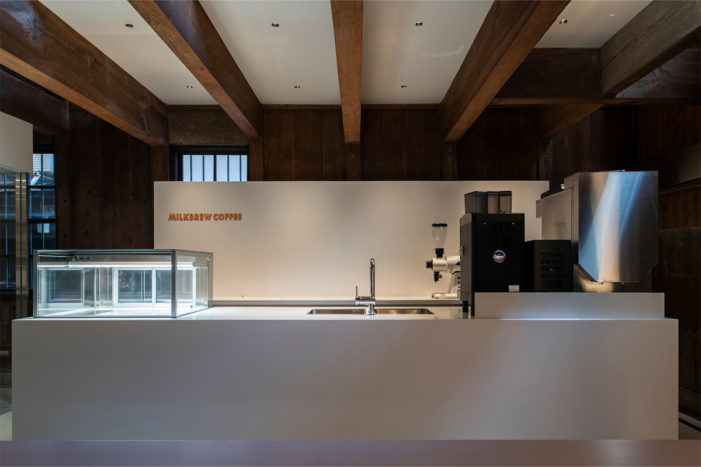
Для молочной лаборатории внутри склада поставили отдельный короб, отступив от старых стен, так что глиняные и дощатые стены остались нетронутыми. Стена между кафе и лабораторией стеклянная, и из зала видно, как там работают.
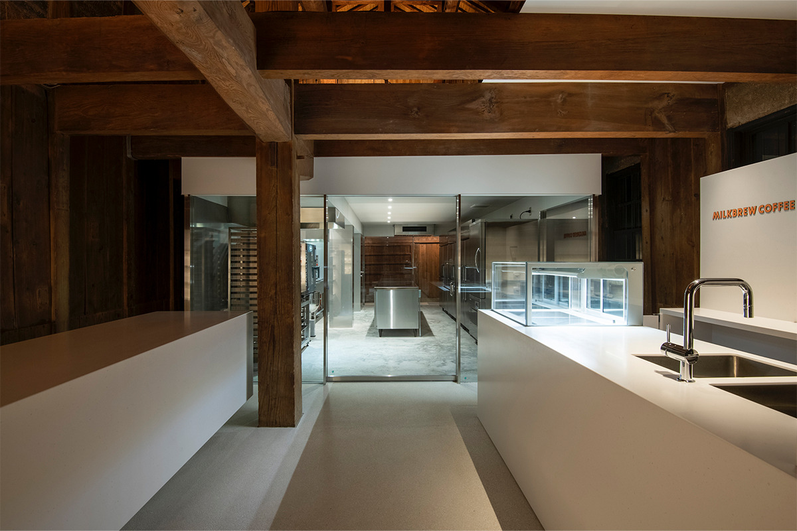
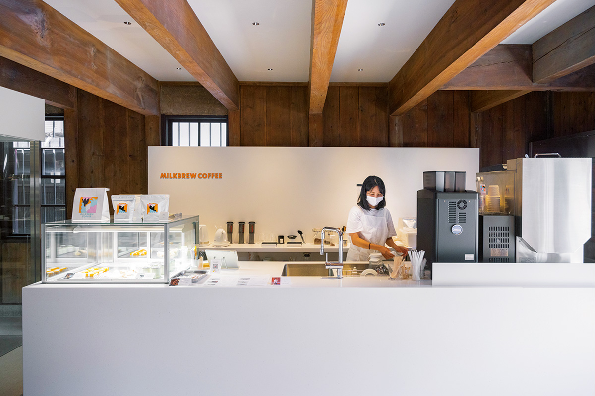
У главного входа сохранили деревянную раздвижную дверь, а изнутри поставили автоматическую. Снаружи склад выглядит как прежде, но на улицу через открытый проём выходит совсем другое настроение.
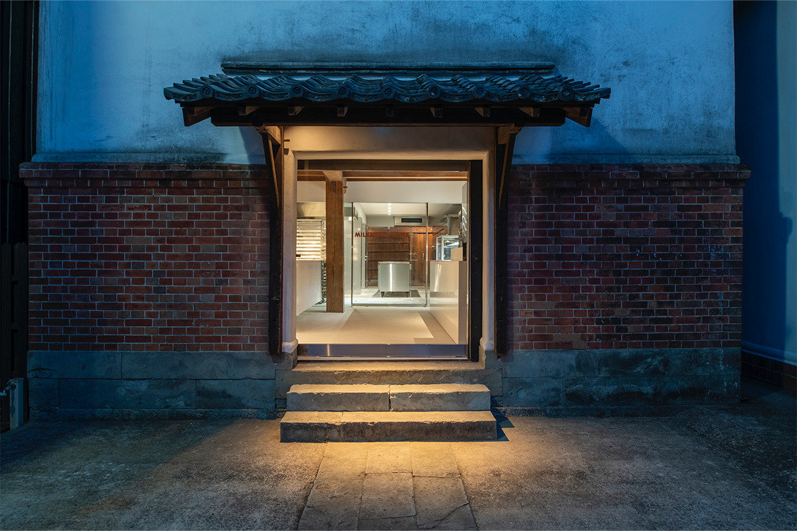
Меню
Что пить в MILKBREW COFFEE
Главное в меню это кофе на молоке, к нему есть мягкое мороженое и сыр. У молока мягкая сладость, которая чувствуется в аромате, и чистое послевкусие: такое бывает, когда за кафе стоит своя ферма.
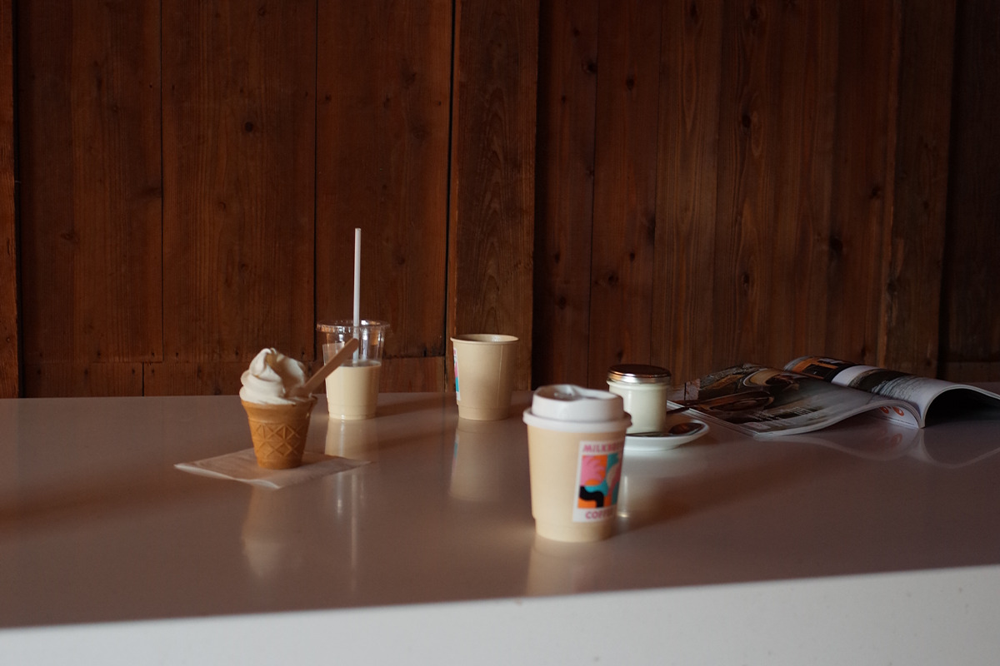
Для милк-брю берут эфиопские зёрна светлой обжарки с фруктовыми и цветочными нотами, и молоко их подчёркивает. Даже тем, кто не любит кислинку светлой обжарки, такой кофе кажется мягче и фруктовее. В 2022 году стакан стоил 600 иен.
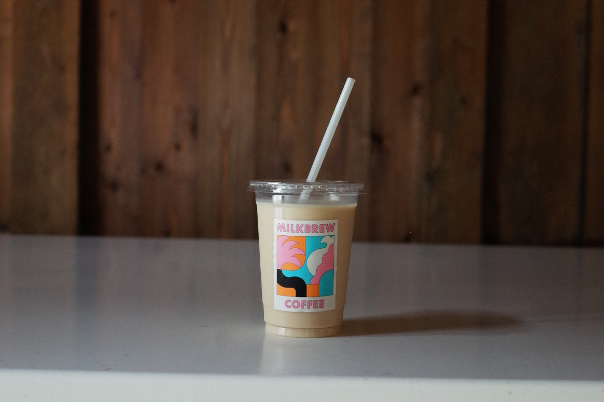
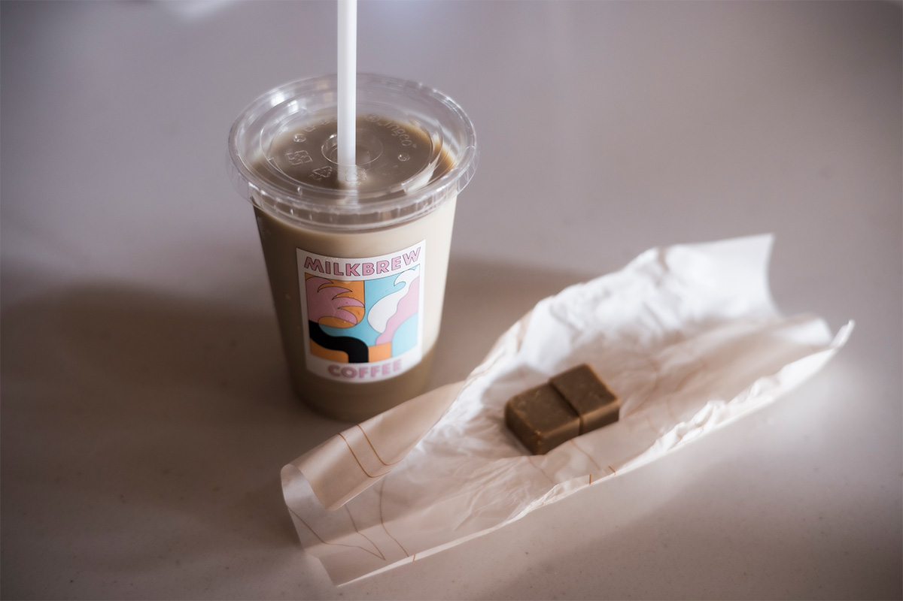
Для горячего молока кафе поставило автоматическую машину фирмы Carimali. От сильного нагрева молоко теряет аромат и сладость, поэтому машина подаёт его непрерывной струёй и прогревает паром равномерно и ровно настолько, насколько нужно. Сладость молока, чистое послевкусие и нежная пена делают простой напиток особенным. В 2022 году чашка горячего молока стоила 500 иен.
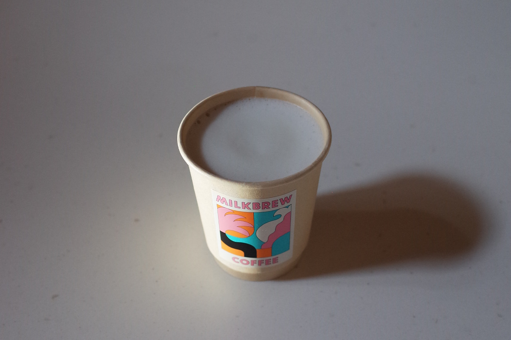
Стаканы в кафе из биоразлагаемого пластика. На ферме их перемешивают в специальной машине, и примерно за две недели они перебраживают в компост.
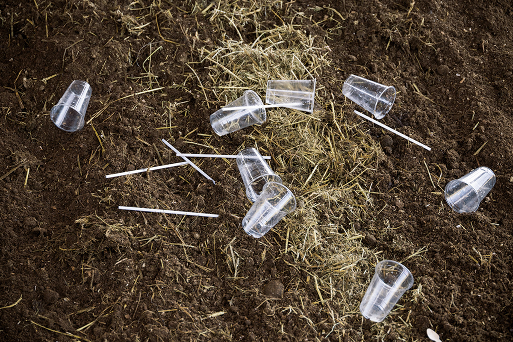
MILKBREW COFFEE
- Адрес
- префектура Сага, Уресино, Сиота, Баба-сита-ко, 727
- Телефон
- +81 80-3221-0871
- Часы работы
- 10:00–16:00, в субботу и воскресенье до 17:00
- Выходные
- понедельник, вторник
- Как добраться
- на машине около 20 минут от развязки Такэо-Китагата скоростной дороги Нагасаки; от станции Хидзэн-Касима около 10 минут на такси
- Сайт
- milkbrew.co.jp
Ферма
Nakashima Farm: молоко, рис и компост
Семья Накасима держит молочную ферму в Уресино три поколения. На своих рисовых полях здесь растят рис на корм, заквашивают его и дают коровам. Навоз и мочу превращают в компост и возвращают на поля. Так замыкается круг, а молоко и сыр становятся его результатом. Хиротака Накасима считает, что конечный продукт может меняться вместе со временем.
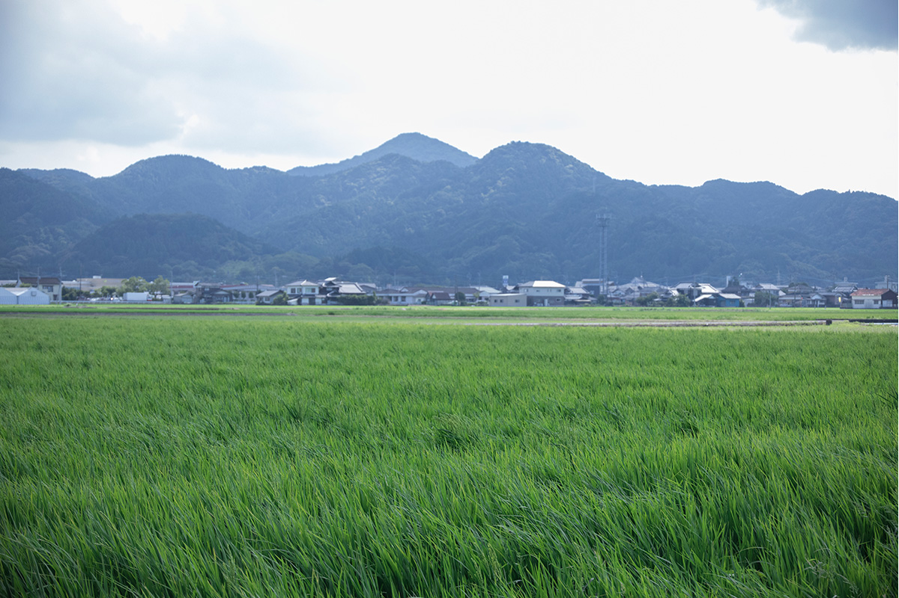
В 2022 году ферма получила специальный приз премии Западного Кюсю за развитие туризма и городской среды. Премию учредили к открытию синкансэна «Камомэ» на линии Западного Кюсю. Член жюри удивилась, что у коровника нет запаха, хотя компост делают прямо там.
«Я не люблю кофе светлой обжарки, но на молоке кислинка становится мягкой и фруктовой. Очень вкусно!»
член жюри премии
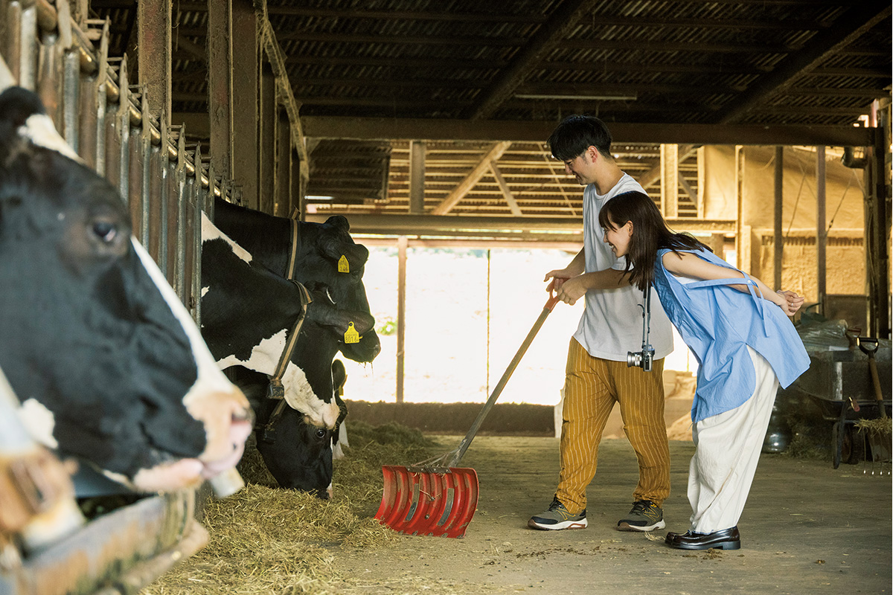
Кафе продаёт не только напитки, но и зёрна для милк-брю, чтобы каждый мог сварить такой кофе дома.
«Когда в кафе пьёшь латте, тебе расскажут, откуда зёрна, но почти нигде не скажут, откуда молоко. Хочется, чтобы молоко тоже выбирали осознанно, как выбирают крафтовое. Поэтому мы продаём зёрна и предлагаем: делайте милк-брю на молоке со своей местной фермы»
Хиротака Накасима
Цель фермера в том, чтобы через этот круговорот родилась новая культура, а за ней разнообразное и устойчивое будущее.
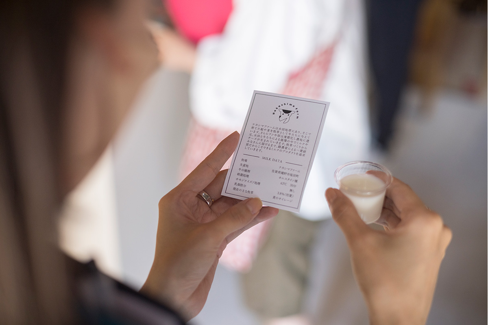
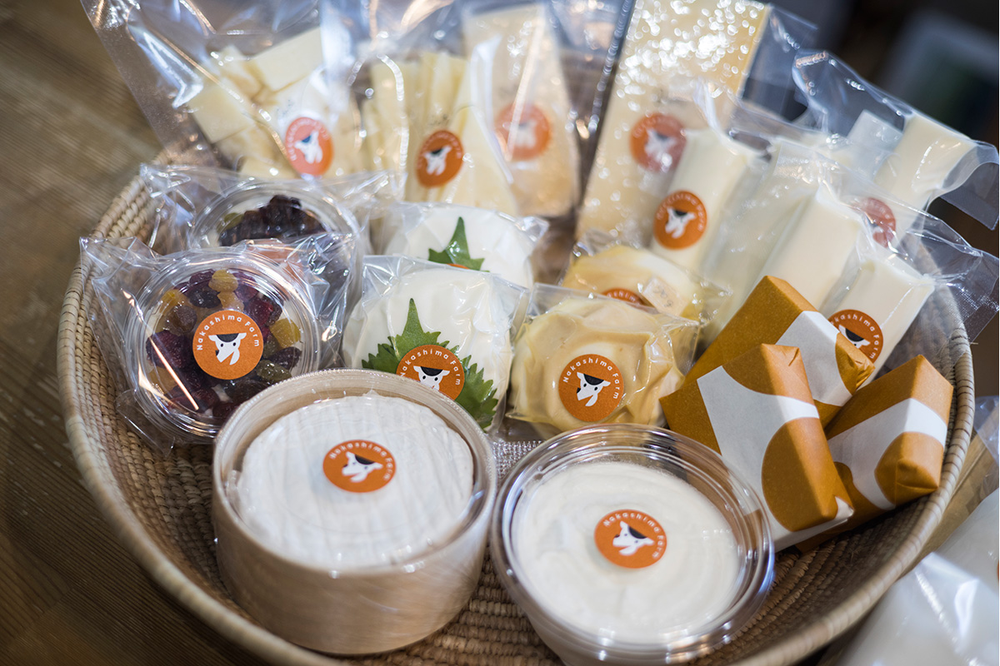
Nakashima Farm
- Адрес
- префектура Сага, Уресино, Сиота, Масаки, 1488
- Телефон
- +81 90-5293-8680
- Часы работы
- 11:00–16:00, в субботу и воскресенье с 10:00
- Выходные
- понедельник, вторник
- Как добраться
- на машине около 20 минут от развязки Такэо-Китагата скоростной дороги Нагасаки; от станции Хидзэн-Касима около 10 минут на такси
Фото: Хироси Мидзусаки, Хиромаса Оцука.